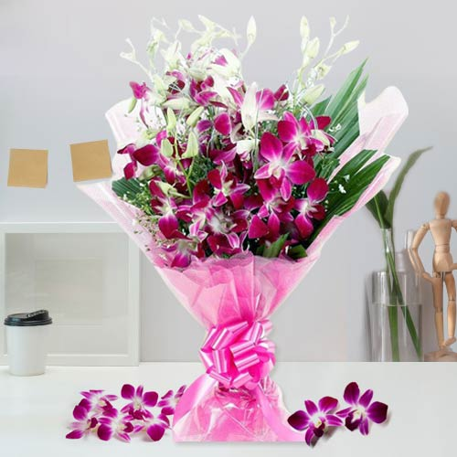

How it Works?

A Beautiful Orchids Bouquet
Purple Orchids Bouquet
---------------------------------------------------------Each color of the rainbow is linked to a unique meaning and feeling, and various colored orchids are no different. As a wealth of symbolism, each colored orchid has its own significance and meaning.
The Victorian Ages had a lasting effect on the symbolism of orchids as the upper class showed great admiration towards these awe-inspiring blooms. Since then, purple orchids have symbolized authority, dignity, and royalty. If you love sending flowers, purple orchids will help you show admiration and respect towards those who receive this breathtaking bloom.